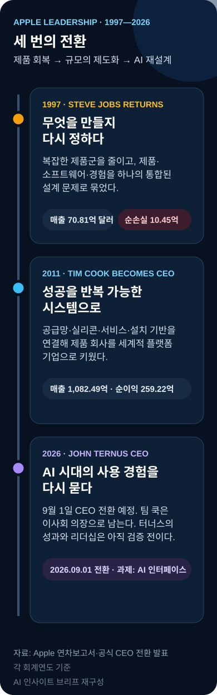
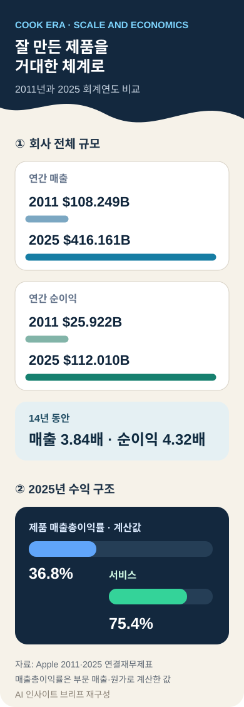
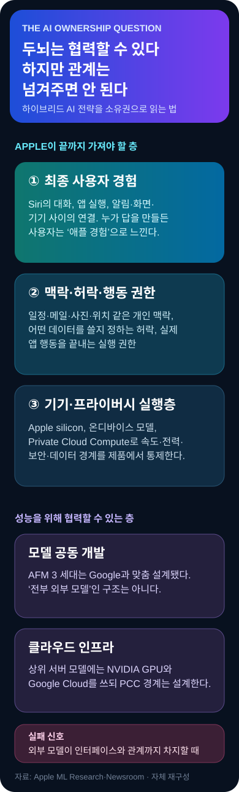

잡스가 만든 애플, 팀 쿡이 키운 애플
존 터너스는 AI 시대의 애플을 다시 설계할 수 있을까. 팀 쿡의 마지막 실적 발표를 출발점으로, 스티브 잡스가 남긴 제품 철학과 쿡이 만든 운영 체계, 그리고 애플이 AI의 핵심을 어디까지 직접 소유해야 하는지를 함께 따져봤다.
퇴진이 아니라 역할 이동
팀 쿡은 9월 1일 CEO 자리에서 내려오지만 애플을 완전히 떠나지 않는다
존 터너스가 CEO를 맡고, 쿡은 이사회 의장으로 이동한다. 따라서 이번 변화는 한 사람의 갑작스러운 퇴장이 아니라 운영권을 넘기면서 전략적 연속성을 남기는 계획된 전환이다. 진짜 질문은 “누가 쿡을 대신하나”보다 “AI 시대의 애플은 어떤 회사여야 하나”에 가깝다.
미국 시간 7월 30일, 한국 시간으로는 7월 31일 새벽에 열린 애플의 2026 회계연도 3분기 실적 발표는 팀 쿡이 CEO로 참석한 마지막 실적 통화였다. 애플은 매출 1,094억 달러, 희석 주당순이익 2.02달러를 기록했고, 매출은 전년 동기보다 16% 늘었다. 애플의 공식 발표와 AP의 독립 보도가 같은 전환점을 전했다.
여기서 날짜를 분명히 할 필요가 있다. 팀 쿡은 아직 CEO다. 애플이 승계를 발표한 날은 4월 20일이고, 존 터너스가 CEO가 되는 날은 9월 1일이다. 그날부터 쿡은 이사회 의장을 맡는다. 애플의 공식 승계 발표는 쿡이 여름 동안 터너스와 함께 전환 작업을 하고, 의장이 된 뒤에도 정책 당국과의 관계를 포함해 회사를 지원한다고 명시했다.
그러니 “팀 쿡이 물러난다”는 문장은 절반만 맞다. 일상적 경영의 최종 결정권은 터너스에게 넘어가지만, 쿡은 회사를 떠나는 은퇴자가 아니다. 2011년 스티브 잡스가 CEO에서 물러나며 이사회 의장으로 남았던 것과 형식은 닮았지만, 이번에는 건강 위기가 아니라 오랫동안 준비한 세대교체라는 점이 다르다.

잡스는 애플의 제품을 고친 것이 아니라 판단 기준을 다시 만들었다
1997년의 애플은 오늘의 애플과 거의 다른 회사였다. 그해 매출은 70억8,100만 달러였고, 순손실은 10억4,500만 달러였다. 여러 종류의 맥과 주변기기가 복잡하게 늘어났지만, 왜 어떤 제품을 만드는지 설명하는 중심은 흐려져 있었다. 잡스의 복귀는 신제품 한두 개를 추가한 사건이 아니라, 회사가 “무엇을 하지 않을 것인지”를 다시 결정한 사건이었다.
잡스 리더십을 카리스마나 프레젠테이션만으로 이해하면 핵심을 놓친다. 그가 되살린 것은 집중, 단순화, 제품 우선, 끝단까지 책임지는 통합 설계였다. 월터 아이작슨이 정리한 잡스의 리더십 원칙에서도 제품과 이익의 순서를 바꾸지 않는 태도, 하드웨어와 소프트웨어와 서비스 전체를 하나의 경험으로 묶는 태도가 반복된다.
이 방식은 아이맥, 아이팟, 아이폰으로 이어졌다. 중요한 것은 개별 제품의 성공보다 제품을 고르는 기준이 회사 전체에 복원됐다는 점이다. 기술 사양을 많이 넣는 것이 아니라 사용자가 무엇을 보며, 어떤 순서로 만지고, 어느 지점에서 망설이지 않게 할지를 조직의 최상위 질문으로 끌어올렸다.
물론 잡스식 리더십에는 비용도 있었다. 최고경영자의 감각과 세부 개입에 크게 의존했고, 극단적인 기준은 조직을 빠르게 몰아붙이는 대신 사람과 의사결정이 한 중심에 몰릴 위험을 낳았다. 잡스가 만든 애플의 힘은 명확한 방향이었지만, 약점은 그 방향을 잡스 없이 반복할 수 있느냐였다.
쿡은 잡스를 흉내 내지 않았고, 그래서 애플을 더 크게 만들었다
2011년 8월 잡스는 CEO에서 물러나며 팀 쿡을 후임으로 강하게 추천했다. 당시 애플의 발표가 강조한 쿡의 경력은 화려한 제품 발표가 아니었다. 최고운영책임자로서 전 세계 판매와 운영, 공급망 전반을 맡아온 사람이었다. 쿡은 잡스와 경쟁할 수 있는 또 다른 제품 선지자가 아니라, 잡스의 제품 철학이 대규모 조직에서도 작동하게 만드는 운영자였다.
쿡 시대의 핵심 단어는 제도화다. 더 많은 결정을 전문 리더에게 맡기고, 설계·조달·제조·물류·판매·서비스를 장기 계약과 데이터로 연결했다. 아이폰 한 대가 세계 수십 개 시장에 같은 품질로 공급되고, 운영체제 업데이트가 수십억 대 기기에 도달하며, 부품 전환이 완제품의 일정과 원가에 맞춰 움직이는 체계를 만들었다.
이것은 “관리만 잘했다”는 평가보다 훨씬 크다. 제품을 잘 만드는 능력과 수억 대를 같은 기준으로 생산하는 능력은 다른 기술이다. 쿡은 후자를 애플의 핵심 경쟁력으로 끌어올렸다. 잡스가 제품의 문법을 만들었다면, 쿡은 그 문법을 재무와 공급망과 조직이 매년 반복하도록 회사의 운영체제를 만든 셈이다.
그 결과는 숫자로도 선명하다. 쿡이 CEO가 된 2011 회계연도 애플의 매출은 1,082억4,900만 달러, 순이익은 259억2,200만 달러였다. 2025 회계연도에는 매출 4,161억6,100만 달러, 순이익 1,120억1,000만 달러가 됐다. 2011년 연차보고서와 2025년 애플 연결재무제표를 비교하면 매출은 3.84배, 순이익은 4.32배다.

회사 가치의 변화는 더 극적이다. 애플은 공식 발표에서 쿡 취임 당시 약 3,500억 달러이던 시가총액이 4조 달러 수준으로 커졌다고 설명했다. AP와 Reuters 보도는 쿡 재임 중 늘어난 시장가치를 3조6,000억 달러 이상으로 집계했다. 시가총액 순위는 주가에 따라 오르내리지만, 애플이 세계에서 가장 큰 상장기업 집단에 남아 있다는 사실은 흔들리지 않는다.
쿡이 만든 두 번째 축은 설치 기반이다. 애플 기기는 이제 전 세계에서 25억 대 넘게 활성 상태로 쓰인다. 이 숫자는 단지 팔린 기기의 누계가 아니다. 아이폰에서 맥으로 파일을 넘기고, 워치와 에어팟이 계정에 붙으며, 결제·사진·건강·콘텐츠 구독이 같은 신뢰 체계 안에서 움직이는 거대한 배포망이다.
세 번째 축은 서비스다. 2025년 서비스 매출은 1,091억5,800만 달러로 이미 거대한 독립 사업이 됐다. 제품 매출총이익률 계산값 36.8%와 서비스 75.4%의 차이는 왜 애플이 하드웨어 판매 이후의 관계를 중요하게 보는지 설명한다. 서비스는 제품보다 높은 마진을 제공하고, 동시에 사용자가 다음 기기도 애플로 선택하게 만드는 연결고리다.
네 번째 축은 자체 실리콘이다. 맥의 인텔 칩을 애플 실리콘으로 바꾼 일은 부품 교체가 아니었다. 운영체제, 앱, 배터리, 발열, 기기 두께와 AI 연산까지 한 회사가 함께 최적화할 수 있게 만든 구조적 변화였다. 잡스 시대의 수직 통합 원칙을 쿡 시대에 반도체 수준까지 확장한 결정이다.
그렇다고 쿡의 애플이 완벽했던 것은 아니다
비판도 피할 수 없다. 쿡 시대에는 아이폰 이후 대중의 생활 방식을 완전히 바꾼 새 제품 범주가 나오지 않았다는 평가가 따라다닌다. 애플워치와 에어팟은 큰 사업이 됐지만 아이폰만큼 독립적인 컴퓨팅 시대를 열지는 못했다. 비전 프로는 기술적 성취에도 불구하고 아직 대중 시장의 기본 기기가 아니다.
AI에서는 더 날카로운 질문을 받았다. 생성형 AI 경쟁이 시작된 뒤 애플은 Siri의 답변 품질과 개인 맥락 이해, 앱을 넘나드는 행동 완성에서 기대보다 늦었다. 거대한 설치 기반을 갖고도 사용자에게 체감되는 AI 전환을 먼저 보여주지 못했다는 사실은 쿡식 운영의 약점을 드러낸다. 확실해질 때까지 기다리고 통합 품질을 높이는 방식이, 학습과 사용자 피드백이 누적되는 AI에서는 뒤처짐을 키울 수 있기 때문이다.
또 공급망 최적화는 효율을 높였지만 특정 지역과 협력사에 대한 집중 위험을 함께 키웠다. 서비스의 성장은 안정적인 이익을 만들었지만 앱스토어 규칙과 수수료를 둘러싼 규제·개발자 갈등도 불렀다. 쿡은 애플을 더 강하게 만들었고, 바로 그 규모 때문에 이전보다 더 많은 정치적·법적 책임도 떠안게 했다.
그래서 팀 쿡은 무엇이었고, 애플은 무엇이 되었나
팀 쿡은 잡스의 대체품이 아니었다. 잡스가 남긴 제품 철학을 공급망, 실리콘, 서비스, 조직과 자본 배분의 언어로 번역한 제도 설계자였다. 그리고 애플은 더 이상 단순한 하드웨어 회사가 아니다. 기기·운영체제·칩·계정·결제·콘텐츠·개발자 생태계와 25억 대의 설치 기반을 한 경험으로 묶는 소비자 플랫폼이다.
이 정의가 중요한 이유는 다음 CEO의 임무를 바꾸기 때문이다. 터너스가 새 아이폰을 한 번 잘 만드는 것만으로는 충분하지 않다. AI가 기기의 메뉴와 앱을 대신해 사용자의 의도를 이해하고 행동을 완료하는 새 인터페이스가 된다면, 애플 플랫폼의 입구 자체가 바뀐다. 다음 CEO는 제품 책임자이면서 동시에 그 입구의 소유권을 지켜야 한다.
“애플은 AI를 빌려 쓴다”는 말은 절반만 사실이다
애플의 AI 전략을 두고 가장 흔한 오해는 회사가 자체 AI를 포기하고 구글의 모델을 빌려 쓴다는 설명이다. 실제 구조는 더 복잡하다. 애플은 2026년 6월 3세대 Apple Foundation Models를 발표했고, 온디바이스 모델 두 개와 서버 모델 세 개를 공개했다. 이 모델들은 구글과 협력해 애플 용도에 맞게 설계됐으며, 가장 큰 서버 모델에는 엔비디아 GPU와 구글 클라우드 인프라도 쓰인다.
애플 머신러닝 연구팀의 기술 설명에 따르면 기기용 AFM 3 Core는 30억 파라미터의 밀집형 모델이고, AFM 3 Core Advanced는 200억 파라미터의 희소 구조를 사용해 작업마다 일부만 활성화한다. 서버에서는 더 큰 텍스트 모델과 이미지 모델, 고성능 모델이 Private Cloud Compute 안에서 동작한다.
즉 애플은 “모델을 만들 것인가, 외부 것을 쓸 것인가” 중 하나만 고른 것이 아니다. 작은 모델은 기기 안에서 빠르고 사적으로 돌리고, 더 어려운 작업은 애플이 설계한 보안 경계의 클라우드로 보내며, 필요한 연구와 연산 자원은 외부 파트너와 협력하는 혼합 전략을 택했다. 애플의 Apple Intelligence 발표는 개인 데이터가 Private Cloud Compute 처리 과정에서 애플이나 다른 회사에 저장되거나 접근되지 않는다고 설명한다.

이 전략은 매우 애플답다. 모든 기술을 직접 발명하는 것보다 사용자가 만나는 마지막 경험을 통제하는 데 집중한다. 지도, 검색, 통신망, 제조 장비처럼 외부 자원을 써도 아이폰의 사용 경험은 애플이 설계해왔다. AI에서도 가장 큰 두뇌가 필요할 때 파트너의 연구와 인프라를 활용하되, 누가 어떤 개인 정보를 보며 무엇을 실행할 수 있는지는 애플이 잡겠다는 접근이다.
애플이 반드시 직접 소유해야 하는 것은 ‘모델’보다 ‘관계’다
첫째는 사용자 맥락이다. 일정, 메일, 메시지, 사진, 위치, 건강 데이터와 기기 사용 습관은 개인 비서가 유용해지는 원료다. 이 데이터가 어떤 조건에서 결합되는지 애플이 통제하지 못하면 프라이버시 약속뿐 아니라 제품 차별화도 무너진다.
둘째는 허락이다. AI가 “무엇을 알고 있느냐”보다 더 중요한 것은 “무엇을 해도 되느냐”다. 사용자를 대신해 표를 예약하고, 메시지를 보내고, 파일을 옮기고, 앱 안에서 결제를 완료하려면 정교한 권한 체계가 필요하다. 애플은 운영체제와 계정, 보안 칩, 앱 권한을 이미 갖고 있다. 이것은 대형 모델 회사가 단기간에 복제하기 어려운 자산이다.
셋째는 실행이다. 답변을 잘 생성하는 챗봇과 실제 업무를 끝내는 에이전트는 다르다. Siri가 사용자의 의도를 이해해 여러 앱을 거치고 결과를 확인할 수 있다면, AI는 기능 하나가 아니라 iOS의 새 조작 방식이 된다. 그 실행 경로를 애플이 소유해야 개발자 생태계와 사용자 경험도 애플 안에 남는다.
넷째는 최종 인터페이스다. 사용자가 매번 외부 AI 앱을 먼저 열고 그 안에서 검색·쇼핑·콘텐츠·업무를 시작한다면 아이폰은 좋은 화면과 센서를 제공하는 단말기로 후퇴할 수 있다. 반대로 Siri와 시스템 AI가 대화의 시작점이 되고 필요할 때 여러 모델을 보이지 않게 호출한다면, 외부 모델은 공급자이고 애플은 고객 관계의 주인이 된다.
그래서 핵심 문장은 이렇게 정리할 수 있다. 가장 큰 AI 두뇌는 필요할 때 빌릴 수 있다. 그러나 사용자의 맥락과 허락, 실제 행동을 수행하는 권한과 최종 경험은 애플이 가져야 한다.
후발주자 애플의 공식은 AI에서도 통할까
애플은 첫 번째로 시장에 들어가는 회사가 아니어도 성공해왔다. MP3 플레이어와 스마트폰, 태블릿과 스마트워치는 애플 이전에도 있었다. 애플의 전형적인 방식은 기술이 성숙할 때까지 기다린 뒤 하드웨어·소프트웨어·서비스를 하나로 묶고, 복잡한 선택을 줄여 대중 시장의 기준을 다시 정하는 것이었다.
하지만 AI는 이전 제품 범주와 다르다. 모델은 배포된 뒤 사용량과 평가 데이터, 개발자 피드백이 쌓이면서 빠르게 개선된다. 먼저 시장을 잡은 회사는 단지 브랜드 인지도만 얻는 것이 아니라 학습의 순환을 먼저 만든다. 검색과 운영체제, 업무 도구에 AI가 붙을수록 사용자 습관과 개발자 통합도 누적된다.
애플의 후발 전략이 성공하려면 세 가지 조건이 필요하다. 첫째, 범용 모델의 성능 격차가 줄어 필요할 때 여러 공급자를 바꿀 수 있어야 한다. 둘째, 애플의 기기와 개인 맥락이 모델 자체보다 큰 차별점이 되어야 한다. 셋째, Siri가 데모가 아니라 실제 행동을 안정적으로 끝내며 수십억 대 기기에 빠르게 퍼져야 한다.
반대로 실패 조건도 선명하다. AI 모델이 새 운영체제처럼 앱과 콘텐츠를 직접 선택하고, 사용자가 아이폰보다 특정 AI 서비스와 더 강한 관계를 맺는다면 애플은 인터페이스 권력을 잃는다. 외부 모델에 지나치게 의존해 내부 연구와 제품 학습의 속도가 느려져도 같은 문제가 생긴다. 협력은 비용과 시간을 줄이지만, 무엇을 배워야 하는지까지 외부에 맡기면 장기 경쟁력이 약해진다.
존 터너스는 누구이며, 왜 그가 선택됐나
존 터너스는 2001년 애플 제품 설계팀에 합류했고, 2013년 하드웨어 엔지니어링 부사장이 됐으며, 2021년 경영진에 들어갔다. 맥, 아이패드, 아이폰, 에어팟을 포함한 주요 제품군의 하드웨어 엔지니어링을 이끌어왔다. 잡스 밑에서 일했고, 쿡을 멘토라고 부르는 내부 승계자다.
그의 선택은 애플이 다음 시대에도 기기와 실리콘의 통합을 전략 중심에 두겠다는 신호로 읽힌다. 생성형 AI 회사 출신이나 서비스 사업 책임자가 아니라, 제품을 실제 형태로 완성해온 엔지니어를 골랐다. AI를 별도 앱으로 보지 않고 칩, 센서, 배터리, 운영체제와 묶인 제품 문제로 보겠다는 뜻일 수 있다.
그러나 여기서부터는 전망이다. 터너스가 뛰어난 하드웨어 책임자였다는 사실이 뛰어난 CEO를 보장하지 않는다. CEO는 제품 완성도뿐 아니라 서비스 성장, 개발자 관계, 규제, 중국 시장, 공급망, 자본 배분, AI 인재 확보를 동시에 결정해야 한다. 아직 터너스에게는 최고경영자로서 검증된 실적이 없다.
스티브 잡스
핵심 역할: 제품의 방향을 재정의한 재건자
강점: 집중, 단순화, 통합 경험, 과감한 범주 전환
위험: 개인의 감각과 권위에 대한 높은 의존
팀 쿡
핵심 역할: 성공을 체계로 만든 제도 설계자
강점: 운영, 공급망, 위임, 서비스와 설치 기반의 확장
위험: 효율과 완성도를 기다리다 전환 속도를 놓칠 가능성
존 터너스
핵심 역할: AI와 기기를 묶어야 할 통합자 후보
강점: 하드웨어·실리콘·제품 개발에 대한 깊은 내부 경험
위험: CEO 역량과 AI·서비스 리더십은 아직 미검증
터너스가 성공하려면 쿡의 유산을 지키면서도 벗어나야 한다
첫 번째 과제는 의사결정 속도다. 애플의 비밀주의와 완성도 기준은 하드웨어 실패를 줄이는 데 효과적이었지만, AI는 출시 뒤에도 계속 학습해야 한다. 터너스는 미완성 제품을 무책임하게 내놓지 않으면서도, 실제 사용에서 얻는 피드백을 더 빠르게 제품에 되돌리는 구조를 만들어야 한다.
두 번째는 하드웨어 책임자의 시야를 넘어서는 일이다. 다음 애플의 경쟁 상대는 다른 스마트폰 제조사만이 아니다. 구글, 오픈AI, 마이크로소프트처럼 모델과 검색과 업무 흐름을 장악하려는 회사들이다. 터너스가 좋은 기기를 만드는 데 머물면 AI 인터페이스의 주도권은 다른 곳으로 이동할 수 있다.
세 번째는 쿡의 그림자다. 쿡이 의장으로 남는 것은 정책과 공급망, 투자자 관계에서 큰 안정 장치다. 동시에 새 CEO가 중요한 결정을 내릴 때마다 “쿡의 뜻은 무엇인가”가 먼저 거론되면 권한 이양이 늦어진다. 성공적인 전환은 쿡이 경험을 제공하되 터너스의 선택을 대신하지 않는 경계를 세우는 데 달려 있다.
네 번째는 자신만의 대표 결정을 만드는 일이다. 잡스에게는 아이폰, 쿡에게는 서비스와 애플 실리콘 전환이 있었다. 터너스에게 필요한 것은 단지 더 얇은 기기나 더 빠른 칩이 아니다. AI가 사용자의 의도를 이해하고 실제 행동을 끝내는 경험, 혹은 스마트폰 이후의 컴퓨팅 형태를 애플답게 정의하는 결정이다.
한국의 기업·개발자·사용자에게 중요한 변화
한국 부품 기업에는 애플의 AI가 기기 사양을 어떻게 바꾸는지가 중요하다. 더 큰 온디바이스 모델은 메모리 용량과 대역폭, 전력 효율, 패키징, 냉각 요구를 높인다. 애플이 클라우드보다 기기 내 처리를 더 강조할수록 스마트폰과 PC의 부품 구성은 AI 서버와 다른 방식으로 고도화될 수 있다.
앱 개발자에게는 Siri가 실제로 앱 안의 행동을 호출하는지가 핵심이다. 사용자가 화면을 직접 열지 않고 “지난주 영수증을 찾아 회사 양식에 넣어 보내줘”라고 요청했을 때 여러 앱의 기능이 연결된다면, 앱의 발견 방식과 인터페이스 설계가 바뀐다. 앱스토어 검색 순위보다 시스템 AI가 어떤 기능을 신뢰하고 호출하는지가 더 중요해질 수 있다.
사용자에게는 한국어 품질과 개인정보 경계가 가장 직접적인 기준이다. 애플은 차세대 Apple Intelligence 지원 언어에 한국어를 포함했지만, 발표보다 중요한 것은 실제 대화에서의 오류율, 앱 행동의 성공률, 민감한 데이터가 언제 기기 밖으로 나가는지를 이해하기 쉽게 보여주는가다.
한국의 플랫폼 기업에도 이 전환은 경고다. AI가 새 입구가 되면 기존 앱의 브랜드와 트래픽이 운영체제 수준의 에이전트에 흡수될 수 있다. 반대로 결제, 지도, 콘텐츠, 상거래 데이터와 실행 능력을 잘 연결하면 글로벌 모델 위에서도 강한 지역 서비스가 될 수 있다. 모델의 크기 경쟁만 볼 것이 아니라 사용자 관계와 실행 권한을 누가 갖는지 봐야 한다.
앞으로 확인해야 할 신호
- 9월 1일 이후 권한 이양: 터너스가 경영진 구성과 제품 우선순위에서 자신의 결정을 얼마나 빠르게 보여주는가.
- Siri AI의 실제 완성률: 데모가 아니라 개인 맥락 이해, 여러 앱 호출, 행동 확인이 반복 사용에서도 안정적인가.
- 내부 모델과 파트너 모델의 경계: 애플이 핵심 학습 능력을 축적하면서도 공급자를 바꿀 협상력을 유지하는가.
- 개발자 생태계: 시스템 AI가 앱을 공정하게 연결하고, 개발자가 새 수익과 사용 경로를 만들 수 있는가.
- 새 하드웨어 범주: AI가 아이폰의 부가기능에 머무는지, 새로운 형태의 개인 컴퓨팅을 여는지.
- 지역별 격차: 한국어 품질과 중국·유럽의 규제 제약이 애플의 전 세계 단일 경험을 얼마나 흔드는가.
애플의 다음 시대는 ‘더 큰 모델’보다 ‘더 완성된 행동’에서 결정된다
스티브 잡스는 애플이 무엇을 만들어야 하는지 다시 정했다. 팀 쿡은 그 답을 세계 최대 규모에서 반복할 수 있는 회사로 만들었다. 두 사람의 차이를 비전가와 관리자로만 나누면 애플의 성장을 설명할 수 없다. 잡스는 제품의 판단 체계를 만들었고, 쿡은 그것을 조직의 판단 체계로 바꿨다.
존 터너스의 과제는 둘을 이어 붙이는 것이다. 잡스처럼 사용자가 만나는 경험의 핵심을 단순하게 정하고, 쿡처럼 그 경험을 수십억 대 기기와 수백만 개발자에게 안정적으로 배포해야 한다. 여기에 AI라는 새 조건이 붙는다. 완성도를 기다리기만 해서는 늦고, 속도만 좇으면 애플이 지켜온 신뢰를 잃는다.
애플이 반드시 세계에서 가장 큰 모델을 직접 가질 필요는 없다. 그러나 사용자의 질문이 어디에서 시작되고, 어떤 개인 맥락이 쓰이며, 누구의 허락으로 어떤 행동이 끝나는지는 놓쳐서는 안 된다. AI 시대의 애플을 결정하는 것은 벤치마크 1위가 아니라, 가장 복잡한 기술을 가장 자연스러운 일상 행동으로 바꾸는 능력일 것이다.
팀 쿡이 남기는 애플은 매우 강하다. 동시에 그 힘의 중심이 아이폰과 앱에서 AI 비서와 에이전트로 옮겨갈 수 있는 가장 위험한 전환점에 서 있다. 터너스가 물려받는 것은 완성된 왕국이 아니라, 성공 공식 자체를 다시 검증해야 하는 거대한 시스템이다. 그의 시대를 평가할 질문은 하나다. 애플은 AI를 가진 회사가 되는 데 그칠 것인가, 아니면 사람들이 AI를 사용하는 방식을 다시 설계하는 회사가 될 것인가.
주요 출처
- Apple — Tim Cook to become executive chairman, John Ternus to become Apple CEO
- AP — Apple CEO transition and Cook-era market value
- Reuters — Apple names John Ternus CEO
- Apple — 2026 fiscal third-quarter results
- AP — Apple’s June-quarter earnings and Cook’s final call
- Apple — 1997 Form 10-K
- Apple — 2011 annual report
- Apple — 2025 consolidated financial statements
- Apple — Steve Jobs resigns as CEO
- Harvard Business Review — The Real Leadership Lessons of Steve Jobs
- Apple Machine Learning Research — Third-generation Apple Foundation Models
- Apple — Apple Intelligence and next-generation Siri AI